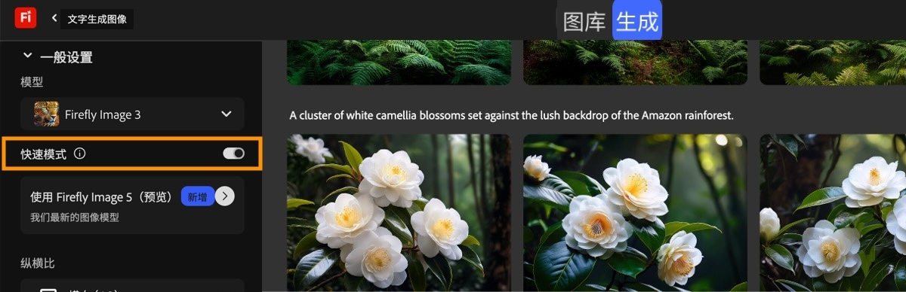

Adobe Firefly 新手入门：0基础也能5分钟跑出AI创作
还在羡慕别人用AI生成好看的图？这篇带你从0开始玩Adobe Firefly：5分钟跑通第一次生图，三个新手必玩功能，还有常见疑问解答，看完就能上手。
这篇能带你从完全不懂AI创作到用Adobe Firefly实打实跑出第一组作品——不需要你会设计、不需要你懂代码，甚至不需要装任何软件，跟着步骤走就行。
它到底是干嘛的？一个生活化类比讲明白
你可以把Adobe Firefly想象成「你脑子里那个会画图、会剪视频、还会说好几门语言的全能好朋友」：
比如你脑子里有个模糊的想法——“我想做一张给猫的生日海报，要暖黄色调，猫戴着小皇冠”——不用你自己画，把这句话说给Firefly听，它几秒就能给你出四张不同风格的草稿；觉得某张的皇冠不好看？圈一下那个区域说“换个更可爱的小尖顶皇冠”，它立刻改好；甚至你还有一段猫生日视频，想翻译成英语给国外的朋友看，Firefly能直接把视频里的中文换成英语配音，连原视频里你的语气都能保留。
它和网上那些免费AI生图工具的区别是：这是Adobe（就是做Photoshop那个公司）出的，有自己的商业安全机制（叫Content Credentials，相当于给每一张生成的作品盖个“AI生成”的戳，商用更放心），而且所有功能整合在一个网页里，不用跳来跳去找插件。
五分钟上手：从注册到第一次生图的最短路径
别担心，整个流程比你注册一个社交账号还简单，跟着走：
- 打开官网注册：直接去Adobe Firefly官网，用邮箱就能注册，新用户会送每日限量的生成积分（对，就是Adobe给的额度，跑一次生成消耗一个），足够你练手。
- 进图像生成面板：登录后默认会停在「图像生成」界面，左侧是功能切换栏（图像/视频/音频/矢量/画板），中间是生成参数区，右侧是结果展示区。
- 开快速模式：第一次玩别纠结细节，先把「快速模式」打开——它会先用低分辨率（512×512）快速出方向，你觉得方向对了再升级成高清，省积分又省时间。
- 选个模型：默认选「Firefly Image 3」就行，这是最稳的入门模型，出图快、不容易崩，等你熟了再试更高清的版本。
- 写第一句提示词：别想太复杂，就把你脑子里的想法直接说出来——比如“暖黄色调，猫戴着小皇冠，生日海报背景有气球和蛋糕”，不用加什么神秘的魔法词，直白就行。
- 点生成：按一下右上角的生成按钮，几秒后右侧会跳出四张不同的变体，这就是AI给你的初稿。

到这里你已经完成了第一次AI创作！接下来的修改全是在这个基础上调整。
上手后先玩这三个功能——新手最值得碰的
第一次生图只是热身，这三个功能会让你真正觉得“这工具真有用”：
1. 生成式填充：圈一下就能改细节
比如你生成的猫海报里，气球太少了，圈一下空白的地方，输入“多放几个彩色气球”，AI会直接在你圈的区域里补上新的气球，其他地方完全不动——这比你用Photoshop手动抠图改快十倍都不止。
你会发现：原来不用全图重跑，圈一下就能改局部——Adobe Firefly文档里还有更多进阶的填充技巧，这才是AI创作的效率所在。
2. 四个变体里挑一张继续迭代
每次生成的四张变体，总有一张最接近你想要的——悬停在那张图上，会弹出操作菜单：点「用作风格参考」复用色调风格，点下载保存到本地，或者点「生成类似内容」继续迭代，直到你满意为止。
这意味着：AI创作不是“一次定生死”，是“从一张满意的草稿开始，一点点磨到完美”。
3. 音视频翻译：保留原音调和时长
如果你有一段自己拍的视频，想发给国外的朋友看，Firefly的翻译功能会让你惊艳：上传视频，选目标语言（比如英语），它会自动把原视频里的中文翻译成英语，用你自己的声音（准确说是你的声音特征）朗读，而且视频画面完全不变，时长一分一秒都对得上。
这不是简单的字幕翻译，是直接替换音轨——你会看到：原来自己的中文口播，变成了英语口播，但语气还是你原来的开心或者认真，太省心了。
小白的三个常见疑问
1. 生成积分不够用怎么办？
新用户的每日限量只是练手用的，真要长期用可以订阅套餐——从每月2000积分的Standard档到每月50000积分的Premium档都有，而且没用完的积分当月不会累积，所以选档的时候别贪多，先按你每月大概生成的次数选个合适的。
2. 生成的图商用安全吗？
这是很多人关心的——Adobe Firefly的所有生成内容都有Content Credentials标识，相当于一张“AI生成证明”，而且它的训练数据是Adobe自己授权的素材，不会用到网上盗的图，商用完全没问题，比那些没授权的免费工具放心多了。
3. 能改已经生成好的图吗？
当然能！除了刚才说的生成式填充，你还可以把生成的图直接送进Photoshop继续精修——Adobe的生态打通了，Firefly里生成的内容可以一键进PS、Illustrator，不用重新上传下载，无缝衔接你的后续创作。
写完这篇的一点小感受
其实AI创作并没有想象中那么难，关键是别被“提示词工程”这种术语吓到——就像你给朋友描述你想要的东西一样，直白说就行。
如果你玩到这里觉得还不够，还有更详细的模型参数、进阶技巧，甚至还有AI画板（Boards）的用法——能在一个画板上同时放几十张变体、和团队一起协作探索方向，适合以后要做概念设计的朋友。
对了，这套关于Adobe Firefly的完整资料，我整理后同步在了三个代码仓库：GitHub、Gitee、GitCode，不同平台各有备份，感兴趣的可以按需访问。